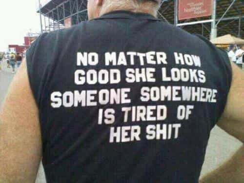

< < < Back
Why You Shouldn’t Seek Emotional Fulfillment Through Women – Return Of Kings
What is the purpose of women in men’s lives? This is a question which has been contemplated throughout history—possibly even by the first man. Men’s opinions on this question vary from person to person.
Essentially, men are biologically driven to seek sexual congress with women, to spread their genes. While the act of sexual congress with women essentially provides physical pleasure (or fulfillment), the emotional aspects of sex too hold some value.
Sex and “relationships” with women can provide emotional happiness for some, albeit the reality is that the nature of that happiness remains fleeting and impermanent. The thrill of banging a hottie, or the novelty of a new sexual conquest do provide an emotional “high”—even if those highs may last just a few moments. And after that feeling has faded away, the whole process starts all over again.
Discontentment indeed is the lifeblood of the evolving man
“Restlessness is discontent and discontent is the first necessity of progress. Show me a thoroughly satisfied man and I will show you a failure.” – Thomas A. Edison
Is there such a thing as a perfect woman? No. Not even if she was the most feminine, beautiful, caring and chaste woman who magically had the skills of the most skilled broad in bed. Even the best qualities of a woman become predictable, over a period of time, in the most successful of marriages, LTRs, or mini-relationships. Predictability sets in, and this eventually leads to boredom and discontent. This is especially true in “relationships” with modern women.
Men adapt individually to this in varied ways: some seek sexual novelty, some adjust themselves to settle in a “successful” relationship by rationalizing to themselves that the present woman in their life is a better proposition than the previous women they’ve experienced, and so on. In fact, most of the so-called “successful” relationships are based on this “calibration of mutual interests and expectations.”
In fem-centric western societies, men commonly lower their standards to satiate sexual thirst and seek female companionship by adjusting to (commonly substandard) modern women. The so-called successful relationships they get into are usually those of staged togetherness—where either or both the partners are pretending to be happy while either secretly harboring unhappiness, resentment, or in the worst cases cuckoldry and adultery.
When it comes to “adjusting” in relationships today, a modern man often effectively rationalizes to himself either or some of the following reasons:
1. He couldn’t find someone else better: Either through a real lack of options in societies where women are substandard, or through the bitter truth that all women are the same
“Love is an ideal thing, marriage a real thing; a confusion of the real with the ideal never goes unpunished.”
– Goethe
2. He’d die alone , so he must find someone to take care of him in old age, which means it’s wiser to lower his expectations to have a companion
“Love is the word used to label the sexual excitement of the young, the habituation of the middle-aged, and the mutual dependence of the old.” – John Ciardi
3. He must pass on his genes to continue his ‘legacy’
4. He’d lose out on sexual access (moreso if he has no game knowledge or his sexual frustration blinds him to other options)
5. He’s jaded of sex with different women, so he wants to “settle down”
“It is not from reason and prudence that people marry, but from inclination.” – Samuel Johnson
6. He’s finally found a unicorn (without realizing that a Madonna and a whore can be the same woman)
“Love is the illusion that one woman is different from the other” – H.L. Mecken
7. He’s found someone who’s socially or financially better than him: essentially he’s “marrying up’ “even it entails being treated like a dog or a bought slave by his partner.
8. He must be fair to his woman (and not subject her to his will and authority)
“Marriage is one of the few institutions that allow a man to do as his wife pleases.” – Milton Berle
“A man who has never made a woman angry is a failure in life.” – Christopher Morley
Or more. Either way, depending on the circumstances, some of these reasons might hold credibility and be valid ones to maintain a relationship in the eyes of society. But do they hold credibility for a man’s long-term emotional fulfillment?
Happiness is a time-influenced (dependent) fleeting pleasure
Time—the most important thing in life—controls the happiness in our lives, whether accepted or not. Everything in life depends on the Time factor. Our lives are finite. We are of course the masters of our choices in our lives, but we cannot deny the regulating influence of Time on our lives and fate itself. Man’s control over his choices in his life are limited, even if they might be great.
Time is also the greatest rationalizer in our lives, more than people’s own hamsters. People rationalize their personal experiences and responses depending on the circumstances Time thrusts over phases in their lives. This, however, doesn’t mean we shouldn’t take charge to acquire control in our lives. The wise man understands this and masters himself to adapt to Time.
Happiness can be described as the feeling of contentment we derive from successfully achieving or doing the things we want—at the right time, that is. But the right thing done or gotten at the wrong time often becomes the wrong thing. The foodie will find no happiness with food at a time when he desperately wants to crap. The lover of women will find no happiness with women at a time when he is besieged with other problems. The worshipper of wealth will find no happiness in wealth at a time when he cannot spend that very wealth to obtain what he wants.
Thus, time is the (often cruel) master of our happiness, working secretly in the background. It can delay our personal successes, while prolonging periods of personal failure beyond our control and in spite of our best efforts. How we invest our time dictates the outcome of our happiness in our lives. Happiness is itself rarely instantaneously obtained at will.
Time also defines our relationships with women. ROIs with women often also depend on how quickly they’d put out. Our tastes in women undergo transformations throughout the phases of our lives, as do our relationships and interactions with them, as we age. The reality about women and relationships is that they all have a shelf life when it comes to providing long-term sustained emotional fulfillment in life for a man. There might be exceptions to this rule, but they are highly infrequent.

For some men, this shelf life of emotional fulfillment through women can be a few weeks, a few months, a few years, or a few decades—depending on his level of adjustment (or toleration), and the kind of woman he’s dealing with. If he’s a person who has low attention span, he’d feel frustrated as quickly as possible within the emotional drudgery of a relationship with a woman who has lost her novel physical appeal to him.
The solution is emotional detachment
Emotional detachment is one of the hallmarks of an alpha. Alpha itself is a mindset. If there is one thing I really admire about a fellow man, it is never his woman, his wealth, or anything else. It is his sense of emotional detachment to all these pleasures. Game is a great way to achieve this state of channelizing of the search of emotional fulfillment in life to other factors apart from women, while retaining physical fulfillment through sex with women. What could be these other factors which provide emotional fulfillment?
It could be a hobby, a life mission, a red pill tribe, spirituality, or a development of a skill or talent within you that provides inner fulfillment instead. I’d rather suggest looking internally than externally, for I believe every man on this planet has a talent or is gifted in some way or the other, but most of the time men themselves discover or develop their hidden talents. Instead, they seek external emotional fulfillment through interaction with women or relationships, while letting their personal gifts go to waste.
In short, the trick is to develop detachment to emotional fulfillment from sex, while instead seeking it through these internal factors that are in your own hands. No woman can hurt a man with options, so do you think a woman has even a minute chance to hurt a man who is emotionally detached?
The caveat of this is not to push emotional detachment to such a level so as to lose complete interest in women and become an ascetic. Aim for moderation to achieve liberation from emotional fulfillment through women. Sex is necessary, for if it weren’t, nature would not have itself designed male and female bodies with reproductive organs to begin with.
The irony of relationships is that women often want men to attach to them on an emotional level. Sex, love, care, affection, or sometimes outright subservience are ways women can get men to become attached. This extends to all women, whether traditional or liberated, sexual or platonic. A man’s emotional attachment is the prize which women seek. They all know a man’s emotional attachment entails his emotional dependence and manipulation, and eventual subjugation.
The power balance shifts in a woman’s favor once she realizes a man is dependent on her for his sexual and, more importantly, emotional fulfillment and gratification. You’d see this in real life cases where the “emotionally close” platonic female friend wields more power over a man than his sexually-gratifying bitchy girlfriend who is emotionally unavailable to him. The more a man emotionally attaches to a woman, the more she wields power over him—even if it may be subtle. This is one of the many reasons betas get sidetracked by women: they are often emotionally dependent on them, even when the women are not offering anything in return.
Awakened alphas understood this throughout history, and usually limited their interaction with women to sex and pleasure – with emotional detachment. Thus, they avoided slavery to their women.
“Woman is the occupation of the idle mind, and the relaxation of the warrior.”
– Napoleon Bonaparte
One thing to note is that most of these emotionally detached men had interactions with many women in their lives, who actually assisted these men by providing counsel or support. Why did those women do that? Female agency? Nope. Because that’s the natural flow of things, as I described above. In the end, the one who loves the least controls the relationship. Women know they are easily replaceable in the life of an emotionally detached man, who could walk away from them at will. The power balance is always in such a man’s favor.
Emotional detachment creates power and authority in men—which women naturally gravitate to—with the possible additional creation of mate insecurity in women, who’d instead do more to keep or impress their men. This can be in the way of sex, love, care, affection, or even wise counsel—to gain a man’s trust and, hopefully, his emotional attachment.
On the flip side, a woman often loses interest once she knows she’s captured a man’s attachment. Women often do more to get men to attach themselves, but then take men for granted after they’ve achieved that.
Conclusion
The more you think about it, the more you realize that emotionally detached men knew one thing: that apart from sex, the ability to rear children, and the ability to maintain a home, women don’t hold (much) potential for investment for emotional fulfillment—especially in the long run they demand through love, emotional intimacy, and relationships.
The only real relationship a man actually has in his entire life is with his own self. In the end, women are at the best a garnish to the dish of life. Regulate their involvement and use in your life, or run the risk that they’d rule your life in the end. Women can gratify you temporarily, but they can never provide complete emotional fulfillment.
If you can succeed in liberating your emotional fulfillment from physical pleasure in relationships with women, then all power goes to you. You will feel more psychologically powerful, which can heighten your pleasure in all interactions with women, both sexual and platonic. In this case, your fulfillment will be be in your own hands, and not hers.
Read Next: You Must Space Out The Things That Make You Happy


{kind=link}
{kind=link}
{kind=link}
{kind=link}